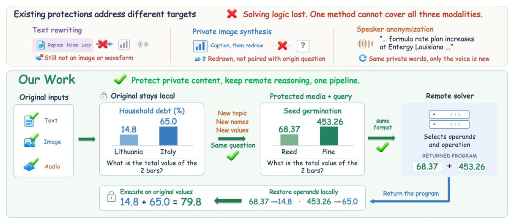
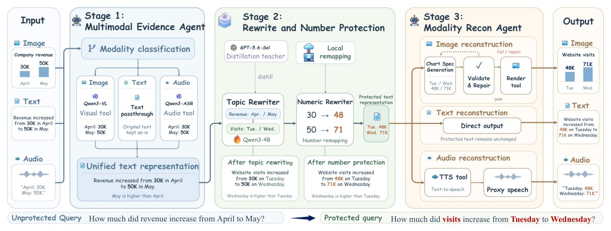
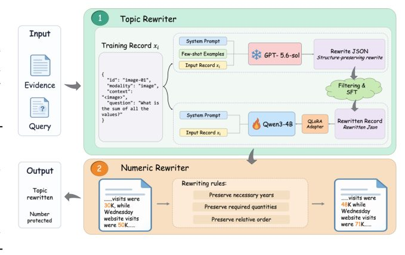
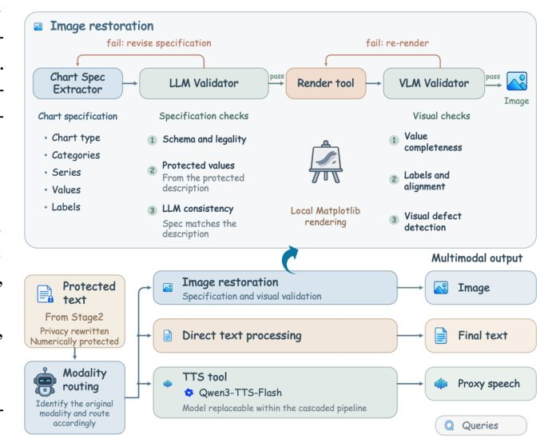
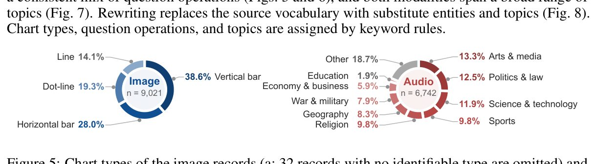
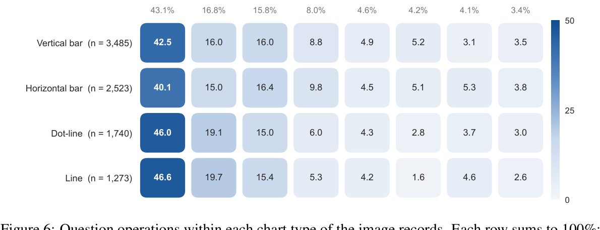
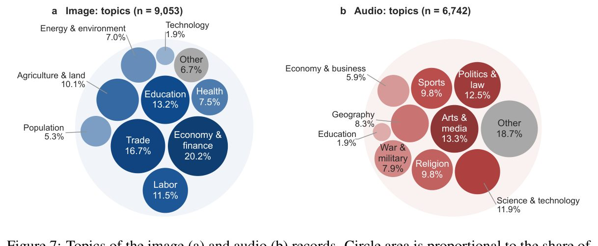
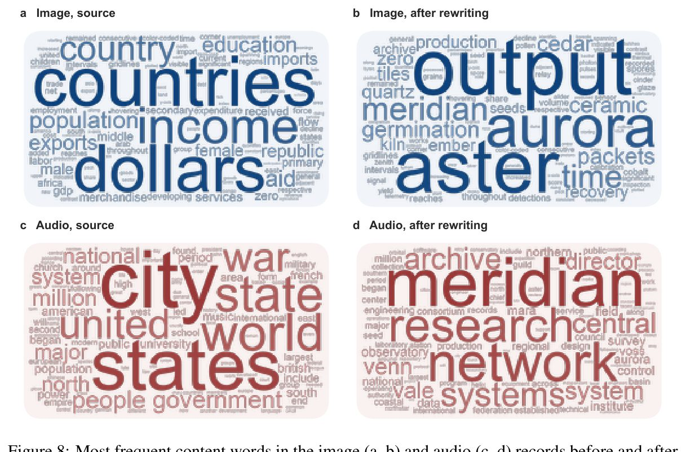
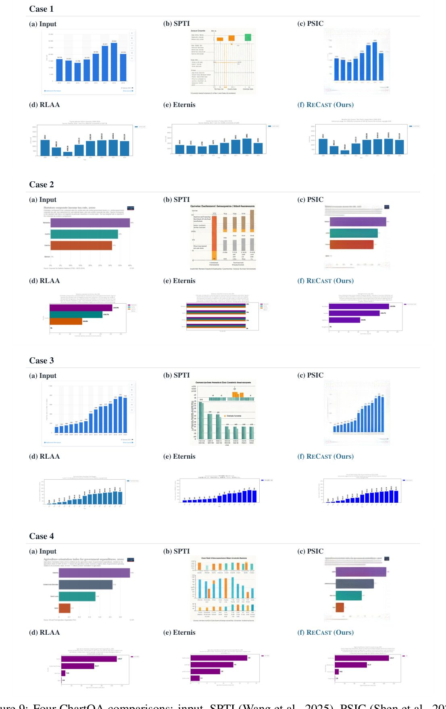
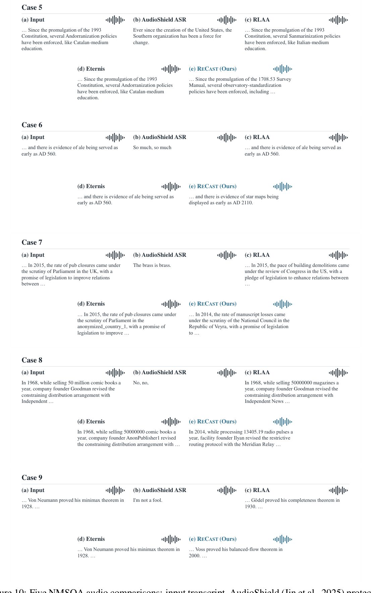

Как защитить данные в облачных нейросетях, не теряя в точности вычислений


Полное описание рисунка
Рисунок 1: RECAST: замена исходного контента при сохранении структуры задачи. Вверху: проиллюстрированные альтернативы направлены на разные цели: переписывание текста не предоставляет напрямую требуемый медиаконтент, синтез изображений на уровне набора данных не связан с конкретным запросом, а анонимизация диктора сохраняет содержание речи. Внизу: RECAST совместно заменяет темы, сущности и значения в доказательствах и запросах, сохраняя при этом отношения, релевантные задаче, и требуемую модальность. Удаленный решатель возвращает программу с защищенными операндами; клиент локально восстанавливает исходные операнды перед выполнением программы для получения ответа. Пример с диаграммой иллюстрирует унифицированную структуру защиты для текста, диаграмм и речи.
Отправка графиков или аудио в мощные облачные модели часто ставит под угрозу конфиденциальность. Исследователи представили ReCast — систему, которая подменяет содержимое файлов, сохраняя их структуру для нейросети. После получения ответа от сервера локальный компьютер восстанавливает исходные значения.
Главное
- ReCast сохраняет 92,43% точности при работе с защищенными данными.
- Система снижает утечку исходного контента до 7,95% запросов.
- Метод поддерживает работу с графиками, аудио и текстом без дообучения.
Подробнее
ReCast работает как агентный плагин, преобразующий входные данные в текстовый «черновик». Система использует локальную модель (4B параметров) для замены имен сущностей и тем, а также применяет обратимое числовое отображение для защиты значений. Это позволяет скрыть реальные данные, сохраняя при этом логические связи, необходимые для решения задачи.
После обработки данные превращаются обратно в исходный формат (изображение или аудио) с помощью генератора, который проходит проверку на соответствие интерфейсу. Облачная модель получает «защищенную» версию, выполняет вычисления и возвращает программу, которую клиент исполняет локально с оригинальными числами. Это гарантирует, что чувствительная информация не покидает устройство пользователя.
Ограничения
Метод тестировался на 4000 примерах ChartQA и NMSQA; эффективность может варьироваться на более сложных или неструктурированных данных.
Подробный разбор статьи
Резюме
Удаленные мультимодальные модели демонстрируют высокие способности к числовым рассуждениям при анализе графиков и речи, однако передача конфиденциальных данных на сторонние серверы создает риски утечки информации. Обычная фильтрация текста не подходит для работы с медиафайлами, а анонимизация личности не скрывает суть задачи. Авторы представляют RECAST — агентный плагин, который заменяет содержимое исходных данных, сохраняя при этом логические связи и требуемую модальность ввода.
Пояснение
Агентный плагин — это программный модуль, который автономно выполняет действия (в данном случае — преобразование данных) от имени пользователя, не передавая исходные чувствительные файлы на внешний сервер.
Система RECAST локально преобразует входные данные в текстовую запись, содержащую доказательства и запросы. С помощью дистиллированной модели объемом 4 миллиарда параметров (4B) система перезаписывает сущности и темы, а значения подменяются через локально обратимую карту.
Агент реконструкции создает и проверяет медиаданные на основе защищенной записи. Удаленный решатель возвращает программу, операнды которой восстанавливаются локально перед выполнением. На выборке из 4000 примеров из наборов ChartQA и NMSQA система RECAST достигла точности 75,10%, что составляет 92,43% от точности при работе с незащищенными данными. Модельный аудит выявил утечку исходного контента в 7,95% запросов, направляемых решателю.
Важно
RECAST обеспечивает 75,10% точности при решении задач, сохраняя 92,43% эффективности исходных моделей и значительно снижая риск утечки данных.
Осторожно
Результаты получены на тестовых наборах данных; эффективность метода в реальных условиях может зависеть от сложности исходных медиафайлов и качества локальной модели.
Введение
Контекст и проблематика
Локально-удаленное взаимодействие позволяет пользователям сохранять конфиденциальные данные на своих устройствах, используя при этом вычислительные мощности удаленных моделей. Ранее этот подход активно исследовался для текстовых данных: перед отправкой запроса локальная модель может переписать его, используя методы дифференциальной приватности, состязательной анонимизации или делегирования с учетом конфиденциальности. В задачах численного рассуждения применяются методы подмены тем и чисел с последующим восстановлением ответа на локальном устройстве. Однако значительная часть конфиденциальных данных представлена не в текстовом виде, а в виде графиков в бизнес-отчетах или аудиозаписей встреч. Локальные модели пока уступают удаленным в мультимодальном восприятии и вычислениях, а удаленные сервисы требуют строгого формата входных данных (изображения или аудиосигналы).
Важно
Существующие методы защиты мультимодальных данных не позволяют сохранять исходный формат (изображение/аудио), при этом текущие средства анонимизации не скрывают содержательные данные, такие как конкретные значения на графиках или в речи.
Существующие подходы либо преобразуют ввод в текст, что несовместимо с интерфейсами мультимодальных сервисов, либо защищают только идентификационные признаки (например, голос), оставляя содержательную информацию (значения величин) доступной для удаленной модели. Для численных задач требуется, чтобы преобразование доказательств и запросов было согласованным, позволяя выполнять вычисления и восстанавливать исходный ответ.
Метод RECAST
Система RECAST решает эту задачу, разделяя потребности задачи (отношения между величинами, операции) и содержание источника (сущности, значения). Это агентный конвейер, работающий на основе общего текстового представления доказательств и запросов (Рис. 1). Процесс включает локальный захват данных, их переписывание с сохранением отношений и чисел, а также реконструкцию модальности через цикл «генерация-проверка-исправление». Удаленный решатель возвращает программу на Python, которая выполняется локально на исходных значениях.
Полное описание рисунка
Рисунок 1: RECAST: замена исходного контента при сохранении структуры задачи. Вверху: проиллюстрированные альтернативы направлены на разные цели: переписывание текста не предоставляет напрямую требуемый медиаконтент, синтез изображений на уровне набора данных не связан с конкретным запросом, а анонимизация диктора сохраняет содержание речи. Внизу: RECAST совместно заменяет темы, сущности и значения в доказательствах и запросах, сохраняя при этом отношения, релевантные задаче, и требуемую модальность. Удаленный решатель возвращает программу с защищенными операндами; клиент локально восстанавливает исходные операнды перед выполнением программы для получения ответа. Пример с диаграммой иллюстрирует унифицированную структуру защиты для текста, диаграмм и речи.
Пояснение
Агентный конвейер — это система, где отдельные модули (агенты) выполняют специализированные задачи, такие как преобразование данных или проверка корректности, взаимодействуя друг с другом для достижения общей цели.
Основные результаты работы: • Разработан RECAST — агентный конвейер, не требующий переобучения при смене модальностей или интерфейсов. • Создан модуль переписывания с использованием дистиллированной локальной модели (4 млрд параметров), обеспечивающий корректное изменение имен и доменов при сохранении численных отношений. • На 4000 тестовых примерах из наборов ChartQA и NMSQA система RECAST сохранила 92,43% точности от уровня без защиты при утечке исходного контента на уровне 7,95%. Дистилляция модели повысила точность на 6,40 процентных пункта и снизила утечку данных с 39,75% до 7,95%.
СВЯЗАННЫЕ РАБОТЫ
2.1 TEXTPRIVACY Методы защиты текстовых данных варьируются от удаления отдельных слов до полной переработки документа. Подходы вроде SanText и CusText используют дифференциальную приватность для замены слов семантически близкими аналогами, тогда как DP-Prompt и DP-MLM применяют языковые модели для генерации защищенного, но связного текста. Метод DP-Fusion ограничивает влияние чувствительных токенов путем объединения распределений генерации, обусловленных различными версиями входных данных. Помимо явных идентификаторов, угрозу представляют контекстные подсказки, раскрывающие личные атрибуты. Состязательная анонимизация (adversarial anonymization) использует атаки на основе вывода для управления правками текста, а RLAA адаптирует этот подход для локальных моделей. Современные методы, такие как STAMP и DP-ST, учитывают полезность задачи и семантическую структуру, распределяя бюджет приватности или используя семантические триплеты для генерации документов. RECAST дополняет эти подходы, обеспечивая согласованность доказательств и запросов после замены чисел, сохраняя при этом возможность работы через фиксированный медиаинтерфейс.
Важно
RECAST использует текст как промежуточное звено для реконструкции защищенных данных в формате, требуемом интерфейсом, сохраняя при этом логические связи.
2.2 ЛОКАЛЬНОЕ И УДАЛЕННОЕ СОТРУДНИЧЕСТВО Локально-удаленное взаимодействие позволяет локальной модели контролировать объем данных, передаваемых более мощной удаленной модели. Существующие методы, такие как CoGenesis, PAPILLON и InferDPT, координируют генерацию между локальными и удаленными узлами, ограничивая доступ к приватному контексту. Более новые разработки, включая Privacy-R1, Veilmind и системы оценки рисков, делают делегирование задач чувствительным к намерениям пользователя и контекстным утечкам. Наиболее близким является подход, при котором тема текстовой задачи на вычисления меняется, числа подменяются, а исходный ответ восстанавливается локально с помощью программы, полученной от удаленной модели. RECAST расширяет эту схему на мультимодальные входы и выходы. Единая текстовая запись доказательств и запросов связывает захват данных, совместную переработку и реконструкцию, позволяя проверять, соответствует ли выпущенный график или аудиозапись защищенным исходным данным.
Пояснение
Программно-ориентированное рассуждение (program-aided reasoning) — метод, при котором модель генерирует код для выполнения вычислений, что повышает точность логических выводов.
2.3 МУЛЬТИМОДАЛЬНОСТЬ И КОНФИДЕНЦИАЛЬНОСТЬ МЕДИАДАННЫХ Риски приватности возникают и при работе с медиаданными: мультимодальные модели способны извлекать личную информацию даже из изображений, не содержащих прямых идентификаторов. Существующие решения включают замену исходных данных абстрактными представлениями (символьные сцены) или перевод визуальных инструкций в текст. Однако такие методы часто несовместимы с фиксированными медиаинтерфейсами, требующими конкретных форматов (графики, сигналы). Методы уровня медиа, такие как анонимизация голоса или маскирование речи, сохраняют модальность, но меняют идентификационные признаки. RECAST отличается тем, что заменяет сущности, темы и значения для каждого запроса, сохраняя при этом связи «доказательство-запрос», необходимые для численных рассуждений. Защита достигается за счет трансформации общего текстового представления, а реконструкция обеспечивает совместимость с интерфейсом.
Осторожно
Большинство методов защиты медиа ориентированы на синтез данных или анонимизацию, тогда как RECAST сфокусирован на сохранении функциональных связей для численных вычислений.
Методы
Система RECAST разделяет исходные данные и задачи, используя общую запись запроса и доказательств. Процесс включает локальный сбор данных, совместную семантическую и числовую переработку и реконструкцию защищенной записи в нужной модальности (Рис. 2). Удаленный решатель получает программу, операнды которой восстанавливаются локально перед выполнением.


Полное описание рисунка
Рисунок 2: Обзор RECAST. Конвейер сначала преобразует мультимодальные входные данные в унифицированное текстовое представление (разд. 3.2), затем применяет переписывание тем и локальное числовое переотображение для защиты сущностей и чисел (разд. 3.3). Защищенный текст впоследствии реконструируется в суррогат в исходной модальности, который воссоздает диаграммы посредством рендеринга и проверки на основе ChartSpec, передает текст напрямую и синтезирует аудио в качестве прокси-речи (разд. 3.4). Пример на рисунке показывает этот конвейер.
3.1 ОБЗОР ЗАДАЧИ И ФРЕЙМВОРКА Для частных данных X и текстового запроса q система использует модальности m и r (текст, изображение, аудио). Цель — снизить раскрытие специфических сущностей, тем и значений, сохраняя связи между доказательствами и запросом. Защищенная запись eD формируется как eD = Hh(Rθ(D)), где Rθ — семантический переписчик, а Hh — числовое преобразование. Удаленный сервис получает только защищенный контент, а локальный клиент выполняет восстановление.
Важно
Система RECAST защищает данные, подменяя значения и переписывая семантику, при этом восстановление ответов происходит только на стороне пользователя.
3.2 МУЛЬТИМОДАЛЬНЫЙ СБОР ДОКАЗАТЕЛЬСТВ Для сбора данных используются специализированные модели: Qwen3-VL-8B-Instruct для графиков и Qwen3-ASR-1.7B для транскрипции аудио. Данные нормализуются в единый формат из пяти полей: id, модальность, контекст, вопрос и варианты ответов. Интерфейс не зависит от конкретной модели, что позволяет заменять модули сбора при сохранении схемы данных.
Пояснение
Нормализация — приведение данных к единому стандарту, чтобы разные модели могли работать с ними по общему шаблону.
3.3 СОВМЕСТНАЯ ПЕРЕЗАПИСЬ И ЗАЩИТА ЧИСЕЛ Семантическая перезапись объединяет доказательства и запрос в связный текст, сохраняя логику операций и типы ответов. Для обучения локальной модели Qwen3-4B используется метод QLoRA на основе данных от GPT-5.6-Sol. Обучающая выборка составила 15 795 пар. Числовые значения защищаются через инъективное отображение h:V→eV, где значения внутри диапазонов (Bk) заменяются с сохранением порядка, а годы (Yg) — с добавлением смещения δg. Целые числа от 0 до 15 остаются неизменными.
Осторожно
Метод сохраняет порядок значений внутри групп, но не гарантирует сохранение исходных соотношений или разностей между числами.
Локальное восстановление операндов происходит путем замены защищенных меток <number> на исходные значения v через обратное отображение h−1. Итоговый ответ вычисляется локально через выполнение программы Exec(Ih−1[eP]).
Реконструкция графиков и речи. Модель удаленного кодирования преобразует защищенные данные в декларативную спецификацию ChartSpec, включающую тип диаграммы, категории, ряды, значения, метки, единицы измерения и цвета. После проверки локальной структуры и значений, фиксированные шаблоны Matplotlib визуализируют спецификацию. Удаленная модель компьютерного зрения сравнивает изображение с защищенной записью, предоставляя структурированную обратную связь для внесения до четырех исправлений. Ни одна из удаленных моделей не получает доступ к исходному графику. В случае неудачных попыток исправления система переключается на валидированную таблицу только при подтверждении интерфейсом; в противном случае запрос отклоняется.
Синтез речи и текста. Удаленный сервис преобразования текста в речь (TTS) синтезирует защищенные фрагменты. Контроллер транскрибирует каждый полученный аудиосигнал, проверяет разборчивость, защищенные количественные показатели и ссылки на сущности, при необходимости запуская повторную генерацию. Для текстовых интерфейсов защищенные данные сериализуются вместе с запросом.
Две взаимодополняющие проверки выпуска. Пусть Vprotected, Vsource \in \0, 1\ обозначают прохождение проверки защищенной записи и локальной согласованности источника соответственно (1 — успех, 0 — отказ). Первая проверяет визуализированные значения, метки, единицы измерения и ассоциации с исходными данными для графиков, а также транскрибированные величины и ссылки для речи. Вторая сопоставляет переписанные сущности с ролями в источнике и проверяет зависимости. Решение о выпуске Vrelease \in \0, 1\ определяется как Vrelease = Vprotected \wedge Vsource.
Важно
Выпуск данных разрешается только при выполнении обоих условий (Vrelease = 1), что обеспечивает проверку как защищенности, так и семантической точности.
ЭКСПЕРИМЕНТЫ
Оценка RECAST проводится по трем направлениям: полезность рассуждений при защите контента, устойчивость вне условий первичного тестирования и вклад отдельных компонентов системы. Мы описываем экспериментальную установку, основные результаты, обобщение на другие наборы данных, поэтапную абляцию и валидацию ИИ-судьи утечек.
4.1 ЭКСПЕРИМЕНТАЛЬНАЯ УСТАНОВКА
Наборы данных. Оценка проводится на четырех наборах данных с числовыми ответами. Для оценки внутри распределения (ID) использовано по 2000 примеров из ChartQA и NMSQA, не пересекающихся с данными для дистилляции Rewriter. Пул дистилляции составил 9370 записей ChartQA и 7000 NMSQA, что дало 15 795 принятых пар «учитель-ученик» (15 480 для обучения, 315 для валидации). Для оценки вне распределения (OOD) использовано по 2000 примеров из ChartX и Spoken-MQA.
Пояснение
Абляция — метод исследования системы путем последовательного отключения её компонентов для определения их значимости.
Базовые модели. Мы сравниваем RECAST с комплексными решениями и отдельными этапами. Remote-native отправляет исходные данные удаленному решателю. Gemma-4-E4B и Qwen2.5-Omni-3B служат локальными эталонами с нулевой утечкой. На этапе 2 мы сравниваем настроенный Rewriter с неоптимизированной моделью Qwen3-4B и учителем GPT-5.6-Sol. На этапе 3 альтернативные методы (PSIC, SPTI, AudioShield) оцениваются по уровню экспозиции данных, так как они не восстанавливают численные операнды для QA. Также сравниваются стратегии реконструкции через Codex CLI и DeepSeek Harness.
Реализация. Этап 1 использует Qwen3-VL-8B-Instruct и Qwen3-ASR-1.7B для конвертации в текстовый формат. Этап 2 использует Qwen3-4B, дообученную через QLoRA. На этапе 3 модели DeepSeek-V4 генерируют ChartSpec, Qwen3-TTS-Flash синтезирует речь, а Qwen3.5-Omni-Plus выступает в роли удаленного решателя.
AudioShield: отсутствие сквозного восстановления
4.2 Основные результаты. Исследование сравнивает три сценария: локальные модели с исходными данными, систему RECAST с защищенными медиафайлами и удаленный вызов, где сервер получает оригинальные данные. RECAST демонстрирует точность 70,20% (нормализованная точность 93,48%) на ChartQA и 80,00% (91,53%) на NMSQA, с общим показателем точности 75,10% (92,43%) и утечкой исходного контента на уровне 7,95%.
Важно
Система RECAST обеспечивает общую точность 75,10% при ограничении утечки данных на уровне 7,95%.
4.3 Оценка на разных наборах данных. Тестирование с использованием модели Qwen3-4B в условиях in-distribution (ID) и out-of-distribution (OOD) показало, что на OOD-данных (ChartX и Spoken-MQA) точность снизилась до 62,40% и 79,40% соответственно (падение на 7,80 и 0,60 процентных пункта). Утечка данных составила 8,00% (ID) и 1,40% (OOD) для изображений, а также 7,90% (ID) и 5,90% (OOD) для аудио. Меньшее падение точности на аудио указывает на более высокую устойчивость модели к смене домена в речевых данных.
4.4 Абляционные исследования. Сравнение прямого мультимодального ввода и предложенного раздельного пути обработки показало, что разделение повышает общую точность с 44,60% до 65,85% (+21,25 п.п.). При оценке этапа реконструкции (Stage 3) выяснилось, что использование защищенного текста дает преимущество в 1,75 п.п. по сравнению с реконструкцией медиа. Однако для аудио реконструкция в форму волны необходима для совместимости с интерфейсами, несмотря на потерю 3,90 п.п. точности по сравнению с текстовым представлением.
Пояснение
Абляционное исследование — это метод проверки вклада отдельных компонентов системы путем их поочередного отключения или замены.
4.5 Валидность LLM-судьи. Поскольку утечка данных не всегда сводится к простому совпадению строк, для оценки использовался автоматизированный LLM-судья. Его решения сравнивались с человеческой разметкой на 400 парах данных. Совпадение составило 91,50% (коэффициент Каппа Коэна κ = 0,83), что подтверждает надежность автоматической оценки.
Осторожно
Оценка утечки основана на LLM-судье, который может иметь систематические ошибки, отличные от человеческих оценок.
Заключение
Мы представили RECAST — фреймворк для защиты данных при работе с численными рассуждениями через мультимодальные интерфейсы, сохраняющий структуру контракта. Основная идея заключается в замене специфического контента источника при сохранении связей задачи и формата медиа, требуемых сервисом. Общая запись доказательств и запросов отделяет защиту контента от модальности, а локальное восстановление операндов разделяет удаленные вычисления над защищенными данными и работу с исходными значениями.
Важно
RECAST сохраняет 92,43% точности удаленных вычислений на наборах ChartQA и NMSQA, при этом модель аудита выявляет утечку данных в 7,95% случаев.
На тестах ChartQA и NMSQA система RECAST сохраняет 92,43% точности по сравнению с незащищенными удаленными вычислениями. Модель аудита, проверяющая утечки контента, зафиксировала их в 7,95% контекстов, связанных с решателем. При использовании дистиллированного локального переписчика (rewriter) объемом 4 млрд параметров общая точность снижается лишь на 0,55 процентных пункта относительно автономной конфигурации учителя. Агент реконструкции превосходит альтернативные методы по точности работы с графиками, а результаты на наборах ChartX и Spoken-MQA подтверждают возможность переноса модели за пределы обучающих данных. Эти данные показывают, что воздействие исходного контента на удаленные сервисы может быть минимизировано при сохранении функциональности и совместимости с существующими интерфейсами.
ЗАЯВЛЕНИЕ ОБ ИСПОЛЬЗОВАНИИ ИИ
Инструменты генеративного ИИ применялись для редактирования языка, улучшения структуры рукописи и описания экспериментов, а также для помощи в редактировании кода. Все научные идеи, методологические решения и результаты были проверены авторами, которые несут полную ответственность за содержание работы.
ЗАЯВЛЕНИЕ О ВОСПРОИЗВОДИМОСТИ
Авторы предоставляют код, промпты, дистиллированный адаптер, трассировки учителя, манифесты запусков (включая хеши среды и данных) и логи аудита для обеспечения воспроизводимости результатов.
ЗАЯВЛЕНИЕ ПО ЭТИКЕ
Использовались общедоступные бенчмарки ChartQA и NMSQA. В процессе калибровки участвовали авторы статьи. Механизм оценки утечек работает с исходными данными только внутри процесса оценки; при реальном развертывании исходные данные остаются локальными, что в сочетании с контрактным контролем доступа повышает безопасность.


Полное описание рисунка
Рисунок 3: Совместное переписывание и числовая защита. Дистиллированный локальный переписчик последовательно изменяет сущности и темы в доказательствах и запросах, сохраняя при этом числовые литералы. Отдельная карта, специфичная для запроса, заменяет числовые значения в рамках поддерживаемых реляционных ограничений. Ее обратная функция остается локальной для восстановления операндов. Как показано на рис. 3, этот этап защищает общую запись доказательств и запросов с помощью двух взаимодополняющих преобразований: дистиллированный локальный переписчик совместно изменяет сущности и темы, поддерживая согласованность доказательств и запросов, а специфичная для запроса числовая карта затем подставляет значения в соответствии с явными реляционными ограничениями. Обратная карта остается локальной для восстановления операндов в программе, возвращаемой удаленным решателем.


Полное описание рисунка
Рисунок 4: Реконструкция модальности и проверка выпуска. Интерфейс выбирает плагин реконструкции. Диаграммы используют генерацию спецификаций, локальный рендеринг и исправление под руководством рецензента; речь использует синтез, за которым следует проверка на основе транскрипции; текст сериализуется напрямую. Выпуск требует как согласованности защищенной записи, так и локальной проверки согласованности источника. Как показано на рис. 4, агент реконструкции преобразует eD в совместимый с интерфейсом артефакт через цикл «генерация-проверка-исправление». Он нацелен на достоверное представление защищенных доказательств, а не на воспроизведение исходного вида диаграммы или личности диктора.












Схема исследования
Препринт не проходил рецензирование. Выводы предварительные.
Источник
| Источник | Категория | Лицензия |
|---|---|---|
| arXiv | other | arxiv |
Источники
| Источник | Ссылка |
|---|---|
| Страница препринта | arxiv.org |
| Полный текст (PDF) | arxiv.org |
| DOI | doi.org |
| Метаданные Crossref | api.crossref.org |
| Europe PMC | europepmc.org |